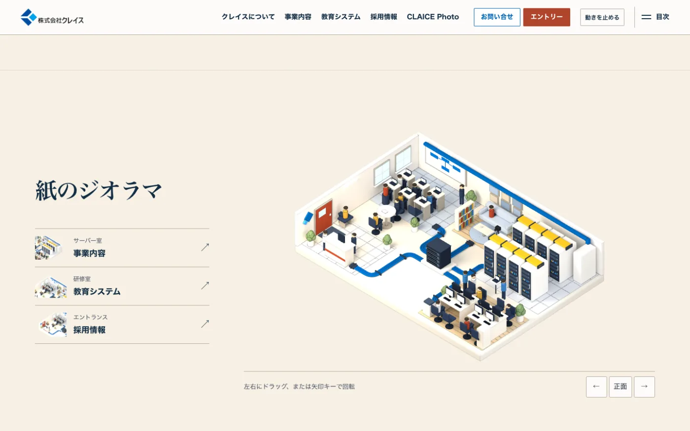

株式会社クレイス ／ 次の試作
本採用の方針は、円卓から事業への場面転換、通信のGIF、事業の工程表示、育成の現在位置表示の4点です。

作者は、照明が周囲をどう照らすかを直し、カメラが寄る場所に絞って形を作り直しています。今回なら、ラック正面の一部を切り出し、コネクターの透明感、筐体の反射、ケーブルが落とす影を同じ写真と見比べる手順に置き換えられます。
3:02 灯りは面を照らす ／ 4:42 近くの6か所を描き直す
事業ページの一場面に、同じ説明文で写真版と3D版を用意します。3DはBlenderでスイッチの前面、プラグ、配線だけを組み、まず写真と同じ角度で1枚レンダリングします。ここで質感を確かめてから、左右に少し回して接続部分をのぞけるようにします。実物を参考にした説明用の模型として扱います。
比較するときは、初めて見る人に「ケーブルはどこにつながっているか」「この会社に何を頼めるか」を尋ねます。スマホでも迷わず本文へ戻れるかを確認します。写真で同じことが伝わるなら、写真を採用して紙模型を外せます。